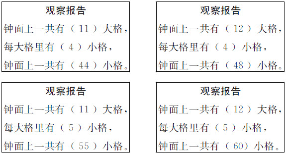

刘松
许多老师都有过借班上课的经历，面对一批陌生的孩子，如何在课前短短的几分钟之内拉近师生的距离，消除陌生感，使学生很快融入课堂，是我们不可回避的问题。即使不借班上课，自己面对平时的课堂，如何让学生尽快、自然且积极地投入学习，也是我们每位老师都要考虑的问题。关于课前的导入活动，有专家概括了三种不同的境界：一是为了活动而活动，仅仅是活动了或者说还不如不活动。这是我们应该摒弃的。二是活动能有效放松学生课前的紧张情绪、消除陌生感、集中注意力等，但仅此而已。这也不是我们应当追求的。三是活动不仅能有效放松学生课前的紧张情绪、消除陌生感、集中注意力等，还能与教学内容有机结合，为课内的教学有效服务。这是我们应该努力而为的。第三种境界是课前导入活动的理想境界，需要我们结合教学内容的特点，精心设计，巧妙连通。现列举我自己教学实践中的若干真实案例，以求批评指正。
教学内容：简单的二人对策论问题——抢18游戏。
两人按自然数顺序轮流报数，每人每次只能报1或2个数。比如第一个人可以报1，第二个人可以报2或2、3；第一个人也可以报1、2，第二个人可以报3或3、4。这样继续下去，谁报到30，谁就胜，请问谁有必胜的策略？
这个游戏主要是为了活跃气氛，放松情绪，更主要的是要让学生感悟做游戏时，有时先说和后说效果截然不同，从而为本节课的主要探究活动做好铺垫。于是，我在上课前与学生这样谈话：
师：同学们喜欢做游戏吗？
生：（齐声说）喜欢。
师：好，今天我们就来做个游戏，这个游戏的名称叫“说反话”。比如，我说“我看天”，你就回答“我看地”，我说“我朝左”，你就回答“我朝右”。明白吗？
生：（觉得很简单，大声地回答）明白。
师：哪位同学愿意和老师来试试？
（很多同学举手，老师找了一位男同学，该同学起身拿起话筒）
师：可以开始了吗？
生：可以。（很自信地）
师：我看天。
生：我看地。（觉得太简单了）
师：我朝左。
生：我朝右。（感觉一点难度都没有，面露得意之色）
师：我张嘴。
生：我闭嘴。（很多学生在窃笑）
师：（故意提高声音，大声地说）我是男的。
（全班同学立刻大笑，该男生憋了半天，才很无奈地说了四个字）
生：我是女的。（全场笑声四起）
师：（同样笑着说）请坐，不能再说了，都变成女的了。（同时与该男生亲切握手）
师：（转向全体同学），谁愿意再来和老师比试比试？
（气氛开始活跃，举手的学生更多了。这次老师找了位女同学。）
师：可以开始了吗？
生：没问题。
师：我朝右。
生：我朝左。（满不在乎地）
师：我看地。
生：我看天。（窃喜，觉得很简单）
师：（声音加重）我越活越年轻。
（众生大笑，该女生很无奈，不好意思说，老师紧追：“快说快说。”）
生：（没办法，只好说）我越活越衰老。
师：还有一句呢，我越长越漂亮。
（众生狂笑，该女生更不好意思说了，教师再次紧追）
生：（举手投降状，无奈地说出）我越长越丑陋。
（教师立刻走上前去，握住她的手说：“那是不可能的，我们刚才仅仅是做了个游戏。”继而转向全体同学，提出问题。）
师：刚才同学们都笑了，可不能只笑。笑过以后要有思考。你们有没有发现，刚才的游戏在玩的过程中有一个人始终占着便宜，是谁呀？
生：（异口同声）老师。
师：对，由于刚才都是老师先说，按照这样的游戏规则，就很容易把你们逼到不好回答的境地，想不想变一下？
生：（一起大声地喊）想。
师：好！咱们刚才说过的不重复，谁来试试？
（此时，一些聪明又调皮的同学有了鬼主意，开始举手。我在好几个地方与学生玩过该游戏，每到一处，学生总能带给我许多惊喜和精彩，我真的很佩服他们。现摘录2008年3月29日在江苏省徐州市讲课时学生的绝妙表达）
生：（一鬼灵精男生张嘴道）我来自天堂。
（全场笑喷，我只好笑答）
师：你什么意思，想让我下地狱啊！
（怕他再说出什么，赶忙让其坐下，请了一位老实的女生，没想到，她一点也不肯嘴下留情）
小女生：（声音小小的）我很温柔。
（全场再次爆笑，我只好苦笑着回答）
师：看看你什么意思，我不就是长得粗鲁了点吗？有话就直说。
（女生坐下，最后请了一位小个子的男生，原指望他说的能让我喘口气，没想到他更“狠毒”）
小个子男生：我长寿无疆。
（有的听课老师眼泪都笑出来了，我也差点笑喷，假装生气地说）
师：你这个小鬼，什么意思，想让我英年早逝啊！行了，不说了，我到徐州来上一节课，连家都回不去了。（再次响起笑声）
（此时，学生已相当兴奋，完全没有了课前的紧张感觉，而我则趁热打铁，取消了上课、起立、坐下等常规的礼仪，立刻转入正题）
师：看来呀，在做游戏的时候，有时先说和后说结果会截然不同。我们再来玩个游戏，好吗？
生：（满脸兴奋地大声回答）好！
随即引入正题。
教学内容：数学广角——找次品（人教版五年级下册第七单元，课本第134-135页）。
5瓶、9瓶、12瓶、27瓶、81瓶等木糖醇中有一瓶少了两三粒，重量就变得轻一些（称为次品），用天平称来称，至少称几次能保证找到？
这个游戏主要是为了活跃气氛，拉近与学生的感情，更主要的是为了引入“次品”的概念。于是，我在上课前与学生这样谈话：
师：同学们仔细看一看老师，能用几句简短的话描述一下老师的特点吗？
生：老师中等身材，头发很平。
生：老师的脸很方，眼睛很小。
……
（教师用鼓励的目光激励学生发言，随便学生怎么说。不管学生说什么，老师都表扬同时表示感谢，以激起其他学生想说话的欲望。待三四个学生发言后，老师话锋一转，提出第二个问题。）
师：同学们非常善于观察，这么短的时间就发现了老师这么多的特点。既然你们如此聪明，请允许我请教第二个问题，你们必须实话实说，说实话的老师奖励吃糖。
（拿出一瓶真的木糖醇，此时学生都好奇地等着，看老师会出什么问题，或者看着老师手里的木糖醇，老师故意矜持了一会儿，再说出问题）
师：你觉得我和你们原来的数学老师相比，谁更像一位优秀的数学老师？
（对于学生而言，这是一个两难的问题。有说原来的老师的，有说现在的老师的，也有两边讨好的。老师对两个都选的同学逼其选其一，同时给选自己原来的老师的两个学生每人一粒糖吃。）
师：（笑着说）同学们不用说了，老师已经知道结果了，应该是你们原来的老师更优秀。（话锋一转）当某项事物不够好时，我们可以称之为——（拖长音，表示疑问）
生：次品。
师：对，次品。（随即板书）
师：（很认真地说）从今天在座的这么多优秀教师中找出我这样的次品是很容易的，可有些时候，找次品就不那么容易了。刚才谁吃我的糖了，请给我站起来！
（吃糖的学生刚才还美滋滋的，现在要被迫站起来）
师：（继续假装生气地说）谁让你们吃糖的？（学生苦笑）瞧瞧你们，惹麻烦了吧。老师刚刚买了3瓶一样的木糖醇，其中一瓶就被你们“偷吃了”两粒，（出示3瓶一样的木糖醇），吃掉两粒的那一瓶自然就变成了——（拖长音，表示疑问）
生：次品。（很快接上）
师：对。那么，怎样才能很快地知道哪一瓶是次品呢？（示意吃糖的学生坐下）如果用天平来称，至少几次才能保证找到呢？
接下来，就可以自然地引入新课的教学。
教学内容：抽屉原理（人教版六年级下册）。
抽屉原理是大家非常熟悉的内容，虽然表述很简单，但它的高度抽象和概括性，对于小学生来说不是十分容易理解，所以人教版教材把它放在了小学阶段的最后一学期“数学广角”中呈现。但即使这样，要让每个学生都深刻理解抽屉原理所描述的“存在性”也并非易事。经过反复思索，我想出了这么一个办法：
师：同学们看见老师了吗？老师现在在哪儿？
生：前面。
师：（走到学生中间）老师现在在哪儿？
生：中间。
师：（走到学生后面）老师现在在哪儿？
生：后面。
师：（走到学生左边）老师现在在哪儿？
生：左边。
师：（走到学生右边）老师现在在哪儿？
生：右边。
（这时，学生一脸的狐疑，心想，这个老师走来走去干什么？）
师：老师不管是在你们的前面还是在你们的后面，或者在你们的中间及左右两边，老师是否都存在于这个教室里（或舞台上）？（顺手板书“存在”二字）
生：是。
师：（指着“存在”二字，大声地重复）老师不管是在你们的前面还是在你们的后面，或者在你们的中间及左右两边，老师都存在于这个教室里。在美丽的数学世界中，有一类奇妙的数学问题也跟“存在”有关，我们今天就一起来研究研究。
随之出示问题，进入正课学习。
不知以上做法是否达到了前面所说的第三种境界的要求。相信老师们都能结合教学的内容和自己的特点，在借班或日常上课时，想出更多更好的课题导入方法。
课堂智慧
自然地导入巧妙地突破
——“认识时分”教学实录
“认识时分”作为小学数学量与计量部分的经典课例，有一个非常重要但又特别容易被忽视的环节，就是对“为什么1小时=60分”的原因分析。钟面上分针和时针同时开始转动同时停止，经过的时间是一样的，是学生真正理解“1小时=60分”的基础。但二年级的小孩子往往受分针和时针转速的影响，认为两者所用的时间不一样。为了突破这个认知上的盲点，我在上课前有意安排了“同时开始同时停”的游戏活动，并创设了“龟兔赛跑”的情境，不仅让学生很快且自然地进入了学习，更为学生突破认知上的难点做好了充分的铺垫。以下为依据现行苏教版二年级上册教材相关内容讲课的实录。
师：请问我们班数学成绩最好的女生是谁？请上台。体育成绩最好的男生是谁？也请上台。你们俩会走路吗？
生：会。
师：走两步瞧瞧！（学生随意走走）走得很不错！（面对男同学示范）你会像老师这样走路吗？（示范一摇一摆的企鹅式走路方式，该学生模仿，其他学生都被该学生的滑稽模仿逗笑了）
师：两位同学请站到一起，我们来个比赛，看谁先走到老师这里来。女同学走得越快越好，男同学必须按照我刚才教你的样子慢慢地走路，明白了吗？（面向其他学生）我们一起喊口令，让他们同时开始。
生：预备，开始！（学生开始比赛走路，两人拉开明显的一段距离后，教师喊停）
师：比赛结束了，他们谁走的路程长一些？谁走的路程短一些？（答案是明显的，学生一起回答。学生齐答后教师立即追问。）
师：他们走过的路程不同，所用的时间一样吗？
生：（大部分）不一样。
师：不一样吗？
生：（大部分）一样。
师：一样吗？
生：（大部分）不一样。
师：到底是一样还是不一样？（此时，所有听课教师都笑了）刚才有同学说用的时间一样，他们走过的路程不同，为什么用的时间一样呢？
生：因为他们是一起开始走的。
师：有没有同时停下？
生：同时停下了。
师：说得好！同时开始同时停，走过的路程有长有短，用的时间总是一样的。（请两个学生按刚才的走法再走一次，让所有学生体会时间相等）
师：同学们，听过龟兔赛跑的故事吗？
生：（异口同声）听过。
师：（饱含深情）小白兔失败后非常后悔，决心再也不骄傲了。有一天，它又碰到了老乌龟。（课件出示龟兔在12棵树围成的圆圈中相遇的画面）它们决定再进行一场比赛。我们一起喊口令，让它们同时开始，好不好？
生：（异口同声）好。
师：预备，开始！（课件播放龟兔从正上方的一棵树开始跑步的画面，兔子跑得很快，很快转了一圈又回到起点。而乌龟速度很慢，只跑到第一棵树那儿。由于课件制作得非常精美，加上配了动感悦耳的音乐，这个环节深深地吸引了在场的每一个人，尤其是喜欢看动画片的学生。）
师：比赛结束了。乌龟跑了多远？
生：只跑到第一棵树那儿。
师：也就是只跑了一个空当。（课件涂色显示从正上方的那棵树到第一棵树的距离，暗示钟面上12到1的一大格）小白兔呢？
生：一大圈。
师：一圈有多少个这样的空当？（稍停顿）我们一起来数一数。（课件一段一段地涂色显示12个空当）
生：（随着课件显示）1、2、3、4…11、12。
师：小白兔跑得真快呀！乌龟与小白兔跑过的路程不同，它们用的时间一样吗？
生：一样。（因为有了前面的铺垫，此时学生几乎是异口同声回答）
师：为什么呢？
生：因为它们是同时开始同时停的。
师：说得好！同时开始同时停，跑过的路程有长有短，但所用的时间是一样的。
师：同学们！这个龟兔赛跑的画面特别像我们生活中常见的一样东西，你们猜是什么呀？
生：钟！表！（课件播放龟兔尾巴拉长，幻化成时针和分针的画面。此时，一个逼真的钟面从刚才赛跑的场地中浮现出来。）
师：对！真聪明！我们今天就来继续研究有关时分的知识。（板书课题：认识时分）
（1）认识时针、分针师：同学们请看，钟面上有几根针？（课件出示标准钟面，三根针用不同的颜色明显区分开来）
生：三根。
师：知道它们分别叫什么名字吗？谁来说说看？
生：最长的是秒针，最短的是时针，不长也不短的是分针。
师：这位同学说得很好！他是根据长短来辨认这三根针的。除了长短，还能根据什么来判断？
生：还可以根据粗细来判断。最粗的是时针，最细的是秒针，不粗不细的是分针。
师：说得好！根据粗细也可以判断。还可以根据什么来判断？
生：老师，您这个钟面上的针还可以根据颜色来判断。红色的是秒针，黄色的是时针，蓝色的是分针。
师：他真聪明！的确，有些钟面上的时针、分针和秒针可以根据颜色来直观地判断，比如老师出示的这个钟面。
师：除了长短、粗细、颜色，还可以怎么区分？（学生陷入沉思，过了一会儿有学生举手）
生：老师，还可以根据跑的速度快慢来区分。
师：（故意装傻）什么意思？
生：跑得最快的是秒针，跑得最慢的是时针，不快也不慢的是分针。
师：说得真好！看来，区分钟面上的三根针，我们可以从长短、粗细、快慢等不同的角度去判断！又短又粗、走得最慢的这根针是专门指示几时的，所以叫时针。（课件在时针旁显示“时针”两个字）不长也不短、不粗也不细、走得不快也不慢的这根针是专门指示几分的，所以叫分针。（课件在分针旁显示“分针”两个字）又细又长、走得最快的这根针是专门指示几秒的，所以叫秒针。（课件在秒针旁显示“秒针”两个字）有关秒的知识，我们以后再研究，好吗？
生：好！（点击课件，隐去秒针）
（2）认识12个数
师：钟面上除了三根针外，还有什么？
生：一些数字。
师：分别是哪些数？
生：1到12。
师：我们一起来数一数。
生：（齐声数）1、2、3、4、5、6、7、8、9、10、11、12。
师：钟面上一共有12个数，不是有12个数字。
（3）认识大格、小格
师：钟面上还有一些大格和小格，各有多少格呢？请拿出学具钟，先独立观察，然后同桌两人合作，把观察到的结果填在观察报告上。（观察报告事先发给学生，两人一张。学生观察后填写，教师巡视。）
（通过巡视，发现学生多出现以下四种结果）

师：谁来说一说你们观察研究的结果？（故意找错误的答案先说）
生：钟面上一共有11大格，每大格里有4小格，钟面上一共有44小格。
师：噢！这是你们观察到的结果。有不同意见吗？
生：钟面上一共有11大格，每大格里有5小格，钟面上一共有55小格。
师：噢！这是你们观察到的结果。还有不同意见吗？
生：钟面上一共有12大格，每大格里有4小格，钟面上一共有48小格。
师：噢！这是你们观察的结果。还有不同意见吗？
生：钟面上一共有12大格，每大格里有5小格，钟面上一共有60小格。
师：奇怪了！同样的钟面怎么可能有不一样的结果？到底谁说的是正确的呢？请看大屏幕！（课件播放怎样的一段是一大格，用颜色显示12-1的一大格）钟面上这样的一段叫一大格，一共有多少大格呢？我们一起来数一数。
生：1、2、3、4、5、6、7、8、9、10、11、12。（课件随着学生数数的节奏依次用颜色显示1-2、2-3、3-4…共12大格。此情景与前面数小白兔一共跑了多少个空当基本相似，只不过这里没有小白兔，已变成纯数学情境。）
师：原来钟面上一共有12大格。每个大格里又有几个小格呢？请看！（课件特写钟面上12-1的一大格，慢慢变大，慢慢变大，直至清晰地看到中间的4个格点。然后用另一种颜色清晰地显示从12开始的第一小格。）钟面上这样的一小段叫做一小格。估计一下，应该有几个小格？
生：5个小格。
师：为什么有人会认为是4小格？
生：可能是数成中间4个点了吧。
师：有道理！中间的确有4个点。但究竟应该有几小格呢？我们也一起数一数。（课件一小段一小段依次用颜色显示）
生：1、2、3、4、5。
师：原来一大格里有5小格，数4格的同学现在明白了吗？
生：明白了。
师：我们5格5格地数，钟面上一共有多少小格呢？（课件从12-1的一大格开始，依次5格5格显示小格）
生：5、10、15、20、25、30、35、40、45、50、55、60。
师：噢！钟面上原来一共有60小格。都清楚了吗？
生：清楚了
（1）认识分
师：钟面我们已经很清楚了。谁知道分针走一小格的时间是几分？（点击课件，暂时隐去时针，显示分针走一小格的图像，用鲜亮的颜色、粗线条标出分针针尖走过的痕迹）
生：1分。
师：对！分针走一小格的时间就是1分。那么，谁知道分针从12走到1是几分？（课件用鲜亮的颜色、粗线条标出分针针尖从12走到1的痕迹）
生：5分。
师：真聪明！分针从12走到1，走了5小格，当然是5分。那么，分针从1走到2是几分呢？（课件用鲜亮的颜色、粗线条标出分针针尖从1走到2的痕迹）
生：10分。
师：10分吗？
生：应该是5分。
师：很好！大家想想看，分针从1走到2，走了几小格呀？
生：5小格。
师：分针走1小格的时间是1分，走5小格的时间当然是5分了。说10分的同学，明白了吗？
生：明白了。
师：我们看分针的时候，可要仔细哦！一定要看清从哪里开始，走到了哪里。如果是10分的话，分针应该从哪里开始？
生：12。
师：对呀！分针从12走到2，走过了两个5小格，就是10分了！（课件用鲜亮的颜色、粗线条标出分针针尖从12走到2的痕迹）
师：请告诉我，分针从12起，继续往前走，走到了4，是多少分？（课件用鲜亮的颜色、粗线条连续标出分针针尖从12走到4的痕迹）
生：20分。
师：好极了！分针从12起，继续往前走，走到了9，是多少分？（课件用鲜亮的颜色、粗线条连续标出分针针尖从4走到9的痕迹）
生：45分。
师：请问你是怎么算的？
生：我是从12开始，5格5格数过来的，一共数了9次。
师：很不错！还有不同的方法吗？
生：老师，分针走到6那里是30分，再加3个5格，就是45分了。
师：好方法！他想到了从6那里过渡一下，真不错！还有不同的方法吗？
生：我是倒过来算的。一圈有60小格，还剩15个小格没走，60减15就等于45分了。
师：这样想可以吗？
生：可以。
师：这个同学太聪明了！大家都想着从12开始顺着算，人家却与众不同，从12开始反过来算，也得出了正确的结果。真了不起！老师要与你握握手！（亲切地与该学生握手，学生非常开心地坐下）
师：同学们都很棒！一个小小的45分，同学们想出了这么多种办法，老师很佩服你们！请继续观察，分针从12起，现在走到了几？
生：11。（课件用鲜亮的颜色、粗线条连续标出分针针尖从9走到11的痕迹）
师：很好！现在是多少分？
生：55分。
师：好极了！继续观察，大声地告诉我，现在是多少分？（课件用鲜亮的颜色、粗线条连续标出分针针尖从11走到12的痕迹）
生：60分。
师：棒极了！分针走一小格是1分，走一圈就是60分。（板书：60分）
（2）认识时
师：“分”我们刚才研究过了。请看，现在时针指着几？（点击课件，淡蓝色的分针慢慢隐去，深褐色的时针浮现出来，正对着12）
生：指着12。
师：走到了几？（点击课件，时针慢慢从12走到1）
生：走到了1。
师：经过几小时？
生：1小时。
师：时针现在指着几？
生：指着1。
师：又走到了几？（点击课件，时针慢慢从1走到2）
生：走到了2。
师：经过了几小时？
生：（少部分）2小时。
师：大家同意吗？
生：不同意！也是1小时。
师：为什么？
生：因为时针是从1走到2，不是从12走到2的。
师：说得好！时针从12走到1是1小时，从1走到2也是1小时。如果是2小时，应该从哪里算起？
生：12。
师：对了！认为是2小时的同学，现在清楚了吗？
生：清楚了。
师：时针从12走到1是1小时，从1走到2也是1小时。谁还能说说，时针从哪儿走到哪儿也是1小时？
生：从2走到3。
师：请说完整的话！
生：时针从2走到3，经过的时间也是1小时。
师：很好！还有呢？
生：时针从3走到4。
师：还有呢？
生：从4走到5。
师：还有呢？（学生马上明白了教师的意思，一口气说完了所有的可能）
师：真棒！时针不管是从12走到1，还是从1走到2，还是从2走到3……还是从11走到12，都是走了1大格。时针走1大格的时间就是1小时。（教师在“60分”前板书“1小时”）
师：同学们，生活中钟表上的时针和分针不像我们刚才那样分开，而是在同一个钟面上同时同向转动。（点击课件，淡蓝色的分针浮现出来，和时针一起正指着12）
师：请注意观察，你发现了什么？（课件播放分针和时针同时从12起开始转动的画面，分别用不同色彩的透明粗线条描出分针和时针的针尖留下的痕迹。分针转了1圈，同时时针只走了1大格。所配音乐与前面播放龟兔赛跑画面时的一模一样。学生看到这个似曾相识的画面，都被深深地吸引了。）
生：我发现分针走了1圈，时针只走1大格。
师：都发现了吗？
生：都发现了。
师：分针走1圈是多少分？
生：60分。
师：时针走1大格是几小时？
生：1小时。
师：那你们说说，1小时和60分是什么关系？
生：相等。（教师在“1小时”和“60分”之间板书“＝”）
师：为什么？（有了前面龟兔赛跑的铺垫，此时学生很容易答出）
生：因为它们是同时开始同时停的。
师：棒极了！同时开始同时停，时针和分针用的时间当然是一样的，所以1小时一定等于60分。
（1）静态体会
师：通过观察，同学们自己发现了1小时＝60分。现在我们来体会1分钟究竟有多长，请静静地听音乐。（点击播放课件：课件以黄山日出为背景，在图片左上角画一个圆。当悠扬的萨克斯乐曲《回家》的音乐响起时，圆中的1条半径从正上方开始，沿顺时针方向一点点扫过圆面，扫过处留下红色的扇形。1分钟结束时，刚好扫过整个圆面。恰似一轮红日当空，又与秒针转钟面一圈极其相似。此时，精美的课件、动听的音乐紧紧地吸引住了现场的每一个人，每个人都全神贯注地陶醉在这唯美的画面和悦耳的音乐中。1分钟后，音乐悄然结束，跳出“1分钟结束”的字样）
师：音乐怎么停了？
生：（似乎还没听够）1分钟到了。
师：对！1分钟结束了。抓紧1分钟，人们可以做许多事情。同学们估计一下，1分钟，你可以做哪些事情？（学生纷纷举手，教师请三个学生说说，只是肯定，不过多评价）
生：1分钟我可以吃一碗饭。
师：哦？那是多大的碗呀？谢谢！请坐！谁还想说？
生：1分钟我可以写完作业。
师：真羡慕你！作业负担真轻。谢谢！请坐！谁还想说？
生：1分钟我可以帮妈妈拖好地。
师：嗯！真是一个爱劳动的好孩子。谢谢！请坐！谁还想说？
生：1分钟我能跑一圈步。
师：哦？跑得还蛮快！是多大的圈呀？好了，不说了。现在咱们一起来试验一下。
（2）动态体验
师：老师准备了两个皮球，请两个同学上讲台来拍球，再请两个同学分别计数。下面的同学请写我事先发的口算纸，看谁拍得多，请写下来，好吗？
生：好！（请4个学生上台，分别准备拍球和计数）
师：准备好了吗？
生：准备好了。
师：各就各位！预备，开始！（课件播放动感音乐，同时在大屏幕空白背景处出示一个大大的圆，口令开始后，圆中的1条半径从正上方开始，沿顺时针方向一点点动态地扫过圆面，扫过处留下红色的扇形。1分钟结束时，刚好扫过整个圆面。此时，学生各忙各的。拍球的学生因控制不住球而忙乱不堪。个别学生只顾盯着拍球的学生，却忘记了做口算题。教师并不去提醒。）
师：（音乐一停，立刻示意）停！时间到！（学生纷纷停下）
师：老师来现场采访！请问这位同学，你拍了多少下皮球？
生：54下。
师：很不错！
师：请问你拍了多少下皮球？
生：78下。
师：好厉害！谢谢4个同学！请回座位！（转向台下的学生）请问你写了多少道口算题？
生：18题。
师：很好！（转向另一个学生）请问你写了多少道口算题？
生：21题。
师：好厉害！（再转向另一个学生）请问你写了多少道口算题？
生：16题。
师：也不错。由于时间关系，就不一一汇报了。老师注意到，刚才比赛的时候，下面有个别同学只顾着看台上的同学拍球，自己的口算题却1道也没做。对他而言，这1分钟就白白地——
生：浪费了。
师：（语气沉重地）是啊！什么也不做，时间就白白浪费了！（转换语调）1分钟我们感受过了，1小时有多长呢？
［课件出示填空：1节课（ ）分钟，课间休息（ ）分钟，再加上（ ）分钟就是1小时］
师：1节课是多少分钟？
生：40分钟。
师：对！（课件显示40）在这40分钟里我们可以学到很多很多知识。课间休息是几分钟？
生：10分钟。
师：对！（课件显示10）在这10分钟里我们可以做一些有趣的游戏。算一算，再加上几分钟就是1小时？
生：10分钟。
师：非常正确！（课件再显示10）1节课加2个课间休息的时间就是1小时。1小时要比1分钟长得多。
（以上内容与人教版的旧教材完全一致，从下面开始，略有差异。人教版旧教材中是转入认识几时几分，而新教材是安排另做1课时，在此转入强化练习1分钟时间观念的建构。）
师：课上到这里，老师都有点累了！谁能上来给大家唱首歌，让大家轻松轻松？（邀请一位学生上台大声唱歌，引导全班学生一起合着节拍打节奏。学生开唱和结束时，教师偷偷记下时间。）
师：谢谢你！唱得真好听！老师有个问题请教大家，刚才这位同学唱歌一共唱了多长时间？请猜一猜。
生：10分钟。
生：8分钟。
生：1分钟。
生：6分钟。
……
师：好了！不猜了。老师公布正确答案。刚才那位同学唱歌大约用时3分钟。我们没有一个同学猜得准确。没关系，下面我们做个专项练习。
师：请各位同学趴在课桌上，闭上眼睛。我喊开始，你就默默地开始计时，你估计到了1分钟，就请睁开眼睛站起来；你觉得时间不到，就趴着别动。我们比比谁的感觉最准确，明白了吗？
生：明白了！
师：请趴好！开始！（课件播放只有一根针从12开始转动的情景，其实就是秒针走1圈，时间设定好，刚好1分钟。很快，就有个别学生站起来。）
师：哇！早啊！（该生见只有他一个人站起来，马上趴下继续等待。大部分学生在1分钟前站起来，也有部分学生1分钟过去好一会儿还是趴着不动）
师：（调侃）喂！起床，起床，时间到了。
师：这一次绝大部分同学把握得不准，再来一次好吗？
生：好！
（指挥学生再来一次，早早站起和迟迟不起的学生明显少了。个别学生把握得非常准确，几乎是卡着时间站起来，教师亲切地与其握手）
师：你真厉害！怎么感觉得这么准？有什么好经验，给大家介绍介绍？
生：（笑着）我是偷偷数数的。
师：好办法。怎么数？
生：从1数到了60。
师：好极了！我们大家按照他的办法再来试试。（这一次，大部分学生都把握得差不多了）
师：请听一首熟悉的乐曲，从开始到结束，大约有多长时间？（课件播放《义勇军进行曲》，这是学生们熟悉的国歌。很多学生听到后，立刻站起来敬礼，教师示意其他学生也站起来。国歌连续播放两遍。）
师：请问两遍国歌的时间是比1分钟长、比1分钟短还是刚好1分钟？
生：比1分钟长。
生：比1分钟短。
生：正好1分钟。
生：比1分钟长。
……
（教师快速地询问五六个学生，认为比1分钟长的学生较多）
师：老师来公布正确答案。两遍国歌的时间比1分钟长，但还不到2分钟。（估计对了的学生欢呼雀跃）
师：两遍国歌的时间比1分钟长，不到2分钟，如果只播放一遍，时间是比1分钟长、比1分钟短还是刚好1分钟呢？
生：比1分钟短。
生：比1分钟短。
……
师：两遍国歌的时间比1分钟长，不到2分钟，一遍国歌的时间自然是比1分钟要短。具体是多长时间呢？这就需要以更小的时间单位来表达，我们以后会学到。（马上有个别学生喊起来：“是秒！是秒！”教师笑着走过去与其握手，夸其聪明，但不作过多的说明和评价。其实，播放一遍国歌的时间大约为48秒。）
师：谢谢同学们陪伴老师度过了愉快的40分钟！这节课就到这里了，再见！